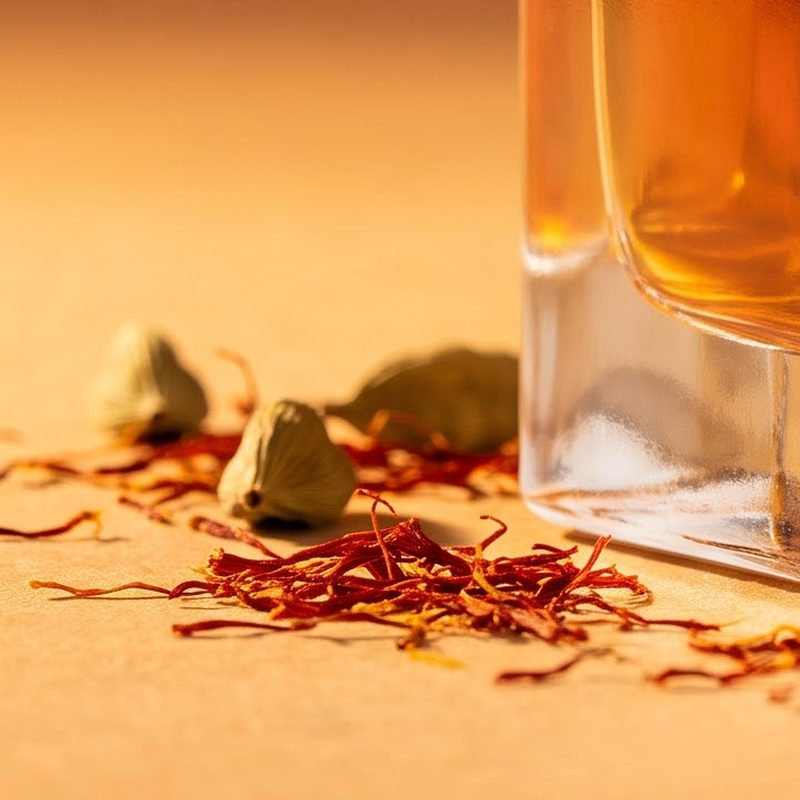
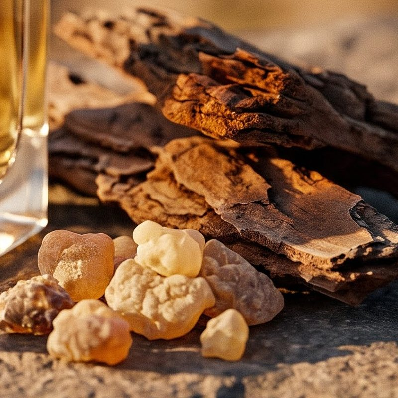

Ingredients
Four ingredients sit at the heart of our collection. Here is where they come from and why we love them.

Woody · from Assam and Southeast Asia
Oud
Oud forms when agarwood trees defend themselves against infection, creating a dark, fragrant resin. It has been burned in Gulf homes for centuries to welcome guests.
Find it in: Midnight Oud
Floral · from Taif, Saudi Arabia
Taif Rose
Grown in the mountains above Taif and picked by hand at dawn, this rose is richer and spicier than European varieties.
Find it in: Desert Rose

Spicy · from Iran and Kashmir
Saffron
Each crocus flower gives only three threads of saffron. In perfume it adds a warm, leathery glow — the same note you taste in Gulf coffee.
Find it in: Saffron Ember
Resin · from Dhofar, Oman
Frankincense
Tapped from Boswellia trees, frankincense was once worth its weight in gold along the incense routes. It smells bright, clean and slightly lemony.
Find it in: Cedar Dune

Note families
| Family | Smells like | Our perfumes |
|---|---|---|
| Woody | Smoke, wood, leather | Midnight Oud, Cedar Dune |
| Floral | Fresh petals, blossom | Desert Rose, Jasmine Majlis |
| Spicy | Saffron, cardamom, warmth | Saffron Ember |
| Fresh | Sea air, citrus | Amber Tide |